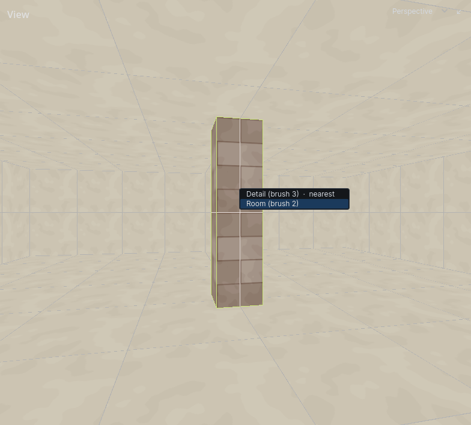
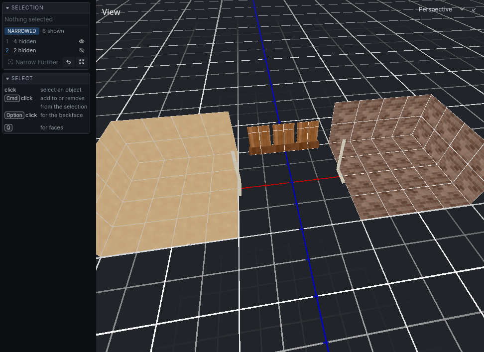
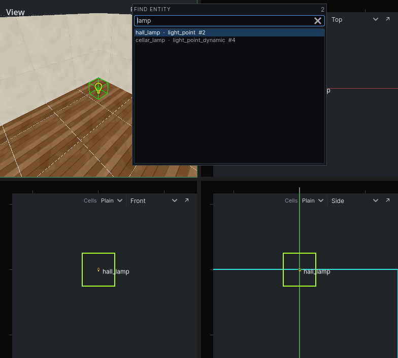

Selecting
The Select tool is the default. Press Esc in any other tool to get back to it.
Clicking
| Do | How |
|---|---|
| Select a brush or entity | click it |
| Select a face | hold Q and click it, or click it in face mode |
| Add to or remove from the selection | Cmd-click |
| Pick the backface of a surface | Alt-click |
| Select one brush of a group or prefab instance | hold I and click |
| Clear the selection | click empty space, or press Esc |
| Select everything not selected | Cmd I |
The brush under the cursor lights up before you click. In face mode the face under the cursor lights up instead.
Nothing on a hidden or locked layer is picked: a click goes through it to what is behind. See Layers.
Face mode
Tap Q, or set Selection on the toolbar to Faces, and clicks select faces rather than brushes until you tap it again. Hold Q instead and it lasts only while the key is down, for a face or two in passing. The tool help at the foot of the left panel says which mode you are in.
In a carved world the near side of a wall is usually rock you do not want. Alt-click picks the side facing away from you.
Things behind other things
When more than one thing is under the cursor, the tool help at the foot of the left panel says how many. Double-click the same spot to open a list of all of them. Hover an entry to light it up; click it to select it.

Dragging a box
Drag to select everything inside a box. Cmd-drag adds to the selection. Hidden layers, locked layers and brushes outside the current narrowing are skipped.
In a 2D view, drag from empty space. A brush is taken when its centre or any of its corners is inside the box, and an entity when its origin is.
- In face mode the box selects faces instead of brushes.
- Push against the edge of the view and it scrolls, so the box can take in what was off screen.
In the 3D view, drag anywhere. A brush is taken only when all of it is inside the box and in front of the camera, so the room you are standing in is never taken. An entity is taken when its origin is inside. The box sees through walls: a brush in the next room is taken if it is inside the box.
In face mode, a drag in the 3D view moves the face under the cursor, as it always does. Drag a box of faces in a 2D view.
Groups
Brushes in a group are selected together.
- Select the brushes.
- Press
CmdGto group them.CmdShiftGungroups.
Hold I and click to select one brush of a group on its own.
Prefab instances select as one piece too. See Prefabs.
Faces
Once one face is selected, grow the selection from it. These are in the Selection menu and the right-click menu.
| Command | Selects |
|---|---|
| Grow Face Selection | every face touching a selected one |
| Select Face Loop | the loop of faces running through the selected ones |
Flood Fill Faces (Cmd Shift F) |
faces reachable from the first selected one across shared edges, turning no more than 30° at each |
Narrowing
Narrowing hides everything except the selection, so you can work on it without the rest of the level in the way.
- Select what you want to work on.
- Press
CmdN. Everything else is hidden. - Select within what is left and press
CmdNagain to narrow further. - Press
CmdShiftNto go back one level. PressCmdNwith nothing selected to show everything again.
What you draw while narrowed joins the narrowed view. What you delete is gone at every level.
The Selection panel on the left lists the levels. Each level has a ghost toggle: turn it on to see what that level hid, faded, instead of not at all.

Focus
Cmd A moves every view onto the selection.
Finding an entity
Ctrl F (Selection → Find Entity…) opens a field over the views. Type, and the list under it narrows to the entities that match:
- A word matches an entity whose type, name, id or any text property contains it.
lampfinds everylight_pointnamedcellar_lamp, and every prop whose model islamp_post. - Several words must all match:
door vault. key=valuematches one property:type=light,name=vault,target=alarm_1.

Up and Down walk the list, and clicking a row does the same: the entity is selected and every view moves onto it, with the field still open. Enter goes to the highlighted row and closes the field; Esc closes it and leaves the selection as it is.
A row drawn faintly is an entity on a hidden layer, or outside what the views are narrowed to. With nothing typed the list is every entity in the map, by type.